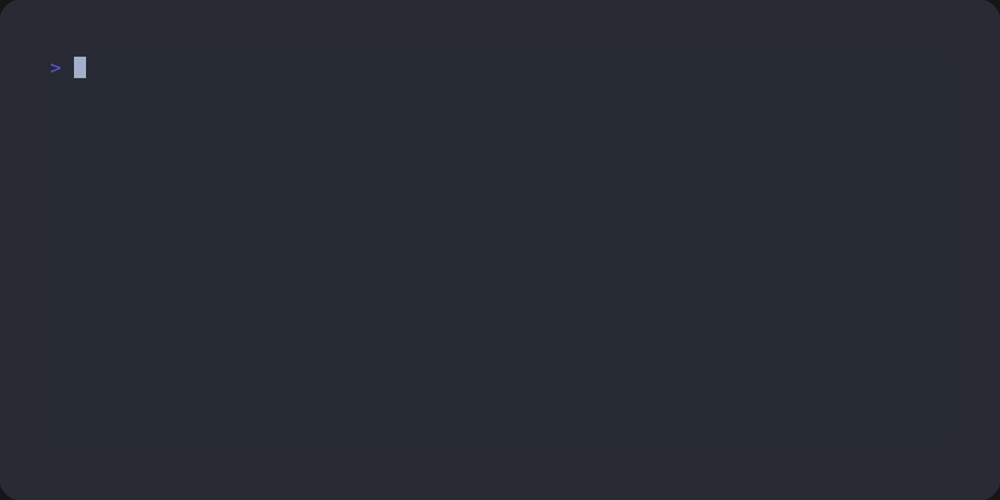
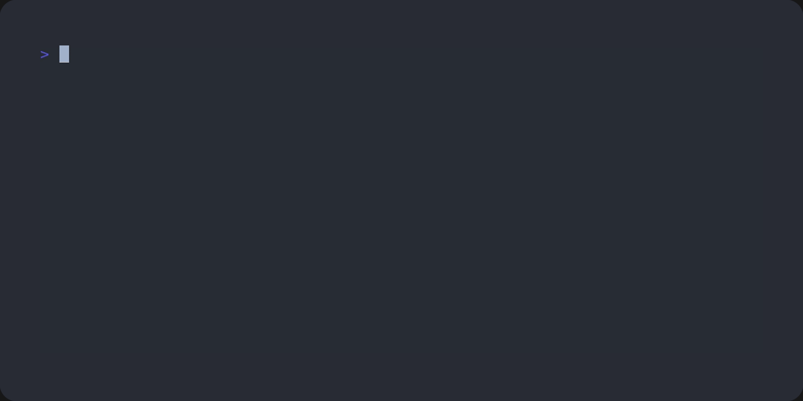

Io
This module implements user-friendly console input and output.
Configuration
Yuio configures itself upon import using environment variables:
FORCE_NO_COLORS: disable colored output,FORCE_COLORS: enable colored output.
The only thing it doesn’t do automatically is wrapping sys.stdout
and sys.stderr into safe proxies. The yuio.app CLI builder
will do it for you, though, so you don’t need to worry about it.
- yuio.io.setup(*, term: Term | None = None, theme: Theme | Callable[[Term], Theme] | None = None, wrap_stdio: bool = True)[source]
Initial setup of the logging facilities.
- Parameters:
term –
terminal that will be used for output.
If not passed, the global terminal is not set up; the default is to use a term attached to
sys.stderr.theme –
either a theme that will be used for output, or a theme constructor that takes a
Termand returns a theme.If not passed, the global theme is not set up; the default is to use
yuio.term.DefaultThemethen.wrap_stdio –
if set to
True, wrapssys.stdoutandsys.stderrin a special wrapper that ensures better interaction with Yuio’s progress bars and widgets.Note
If you’re working with some other library that wraps
sys.stdoutandsys.stderr, such ascolorama, initialize it before Yuio.
To introspect the current state of Yuio’s initialization, use the following functions:
- yuio.io.get_term() Term[source]
Get the global instance of
Termthat is used withyuio.io.If global setup wasn’t performed, this function implicitly performs it.
- yuio.io.get_theme() Theme[source]
Get the global instance of
Themethat is used withyuio.io.If global setup wasn’t performed, this function implicitly performs it.
- yuio.io.wrap_streams()[source]
Wrap
sys.stdoutandsys.stderrso that they honor Yuio tasks and widgets.Note
If you’re working with some other library that wraps
sys.stdoutandsys.stderr, such ascolorama, initialize it before Yuio.See
setup().
- yuio.io.restore_streams()[source]
Restore wrapped streams.
See
wrap_streams()andsetup().
- yuio.io.streams_wrapped() bool[source]
Check if
sys.stdoutandsys.stderrare wrapped. Seesetup().
- yuio.io.orig_stderr() TextIO[source]
Return the original
sys.stderrbefore wrapping.
- yuio.io.orig_stdout() TextIO[source]
Return the original
sys.stdoutbefore wrapping.
Printing messages
To print messages for the user, use these functions:
- yuio.io.error_with_tb(msg: str, /, *args, **kwargs)[source]
Print an error message and capture the current exception.
Call this function in the except clause of a try block or in an __exit__ function of a context manager to attach current exception details to the log message.
- Param:
exc_info either a boolean indicating that the current exception should be captured (default is
True), or a tuple of three elements, as returned bysys.exc_info().
- yuio.io.md(msg: str, /, *args, **kwargs)[source]
Print a markdown-formatted text.
Yuio supports all CommonMark block markup. Inline markup is limited to backticks and color tags.
See
yuio.mdfor more info.
- yuio.io.raw(msg: ColorizedString, /, **kwargs)[source]
Print a
ColorizedString.This is a bridge between
yuio.ioand lower-level modules likeyuio.term.In most cases, you won’t need this function. The only exception is when you need to build a
ColorizedStringyourself.
Coloring the output
By default, all messages are colored according to their level.
If you need inline colors, you can use special tags in your log messages:
info('Using the <c code>code</c> tag.')
You can combine multiple colors in the same tag:
info('<c bold green>Success!</c>')
Only tags that appear in the message itself are processed:
info('Tags in this message --> %s are printed as-is', '<c color>')
For highlighting inline code, Yuio supports parsing CommonMark’s backticks:
info('Using the `backticks`.')
info('Using the `` nested `backticks` ``, like they do on GitHub!')
List of all tags that are available by default:
code,note: highlights,bold,b,dim,d: font style,normal,black,red,green,yellow,blue,magenta,cyan,white: colors.
Customizing colors and using themes
The setup() function accepts a Theme class.
You can subclass it and supply custom colors, see yuio.theme
for more info.
Indicating progress
You can use the Task class to indicate status and progress
of some task:
- class yuio.io.Task(msg: str, /, *args, _parent: Task | None = None)[source]
A class for indicating progress of some task.
You can have multiple tasks at the same time, create subtasks, set task’s progress or add a comment about what’s currently being done within a task.

This class can be used as a context manager:
with Task('Processing input') as t: ... t.progress(0.3) ...
- progress(*args: float | None, unit: str = '', ndigits: int | None = None)[source]
Indicate progress of this task.
If given one argument, it is treated as percentage between 0 and 1.
If given two arguments, they are treated as amount of finished work, and a total amount of work. In this case, optional argument unit can be used to indicate units, in which amount is calculated:
with Task("Loading cargo") as task: task.progress(110, 150, unit="Kg")
This will print the following:
■■■■■■■■■■■□□□□ Loading cargo - 110/150Kg
- progress_size(done: float | int, total: float | int, /, *, ndigits: int = 2)[source]
Indicate progress of this task using human-readable 1024-based size units.
Example:
with Task("Downloading a file") as task: task.progress_size(31.05 * 2**20, 150 * 2**20)
This will print:
■■■□□□□□□□□□□□□ Downloading a file - 31.05/150.00M
- progress_scale(done: float | int, total: float | int, /, *, unit: str = '', ndigits: int = 2)[source]
Indicate progress of this task while scaling numbers in accordance with SI system.
Example:
>>> with Task("Charging a capacitor") as task: ... task.progress_scale(889.25E-3, 1, unit="V")
This will print:
■■■■■■■■■■■■■□□ Charging a capacitor - 889.25mV/1.00V
- iter(collection: Collection[T]) Iterable[T][source]
Helper for updating progress automatically while iterating over a collection.
For example:
with Task('Fetching data') as t: for url in t.iter(urls): ...
This will output the following:
■■■■■□□□□□□□□□□ Fetching data - 1/3
{kind=link}
Querying user input
If you need to get something from the user, ask() is the way to do it.
- yuio.io.ask(msg: str, /, *args, parser: Parser[Any] | None = None, default: Any = _Placeholders.MISSING, input_description: str | None = None, default_description: str | None = None, secure_input: bool = False) Any
Ask user to provide an input, parse it and return a value.
If stdin is not readable, return default if one is present, or raise a
UserIoError.
ask()accepts generic parameters, which determine how input is parsed. For example, if you’re asking for an enum element, Yuio will show user a choice widget.You can also supply a custom
Parser, which will determine the widget that is displayed to the user, the way auto completions work, etc.Example:
class Level(enum.Enum): WARNING = "Warning", INFO = "Info", DEBUG = "Debug", answer = ask[Level]('Choose a logging level', default=Level.INFO)
- Parameters:
msg – prompt to display to user.
args – arguments for prompt formatting.
parser – parser to use to parse user input. See
yuio.parsefor more info.default – default value to return if user input is empty.
input_description – description of the expected input, like
'yes/no'for boolean inputs.default_description – description of the default value.
secure_input – if enabled, treats input as password, and uses secure input methods. This option also hides errors from the parser, because they may contain user input.
{kind=link}
- yuio.io.wait_for_user(msg: str = 'Press <c note>enter</c> to continue', /, *args)[source]
A simple function to wait for user to press enter.
If stdin is not readable, does not do anything.
You can also prompt the user to edit something with the edit() function:
- yuio.io.edit(text: str, /, *, comment_marker: str | None = '#', editor: str | None = None) str[source]
Ask user to edit some text.
This function creates a temporary file with the given text and opens it in an editor. After editing is done, it strips away all lines that start with comment_marker, if one is given.
If editor is not available or returns a non-zero exit code, a
UserIoErroris raised.If launched in a non-interactive environment, returns the text unedited (comments are still removed, though).
- yuio.io.detect_editor() str | None[source]
Detect the user’s preferred editor.
This function checks the
EDITORenvironment variable. If it’s not found, it checks whethernanoorviare available. Otherwise, it returns None.
All of these functions throw a error if something goes wrong:
Suspending the output
You can temporarily disable printing of tasks and messages
using the SuspendLogging context manager.
- class yuio.io.SuspendLogging[source]
A context manager for pausing log output.
This is handy for when you need to take control over the output stream. For example, the
ask()function uses this class internally.This context manager also suspends all prints that go to
sys.stdoutandsys.stderrif they were wrapped (seesetup()). To print through them, usesys.__stdout__andsys.__stderr__.- static warning(msg: str, /, *args, **kwargs)[source]
Log a
warning()message, ignore suspended status.
- static success(msg: str, /, *args, **kwargs)[source]
Log a
success()message, ignore suspended status.
- static error(msg: str, /, *args, **kwargs)[source]
Log an
error()message, ignore suspended status.
- static error_with_tb(msg: str, /, *args, **kwargs)[source]
Log an
error_with_tb()message, ignore suspended status.
- static heading(msg: str, /, *args, **kwargs)[source]
Log a
heading()message, ignore suspended status.
- static raw(msg: ColorizedString, **kwargs)[source]
Log a
ColorizedString.
Python’s logging and yuio
If you want to direct messages from the logging to Yuio,
you can add a Handler: